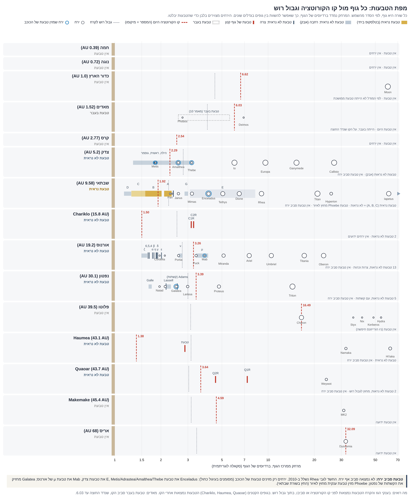
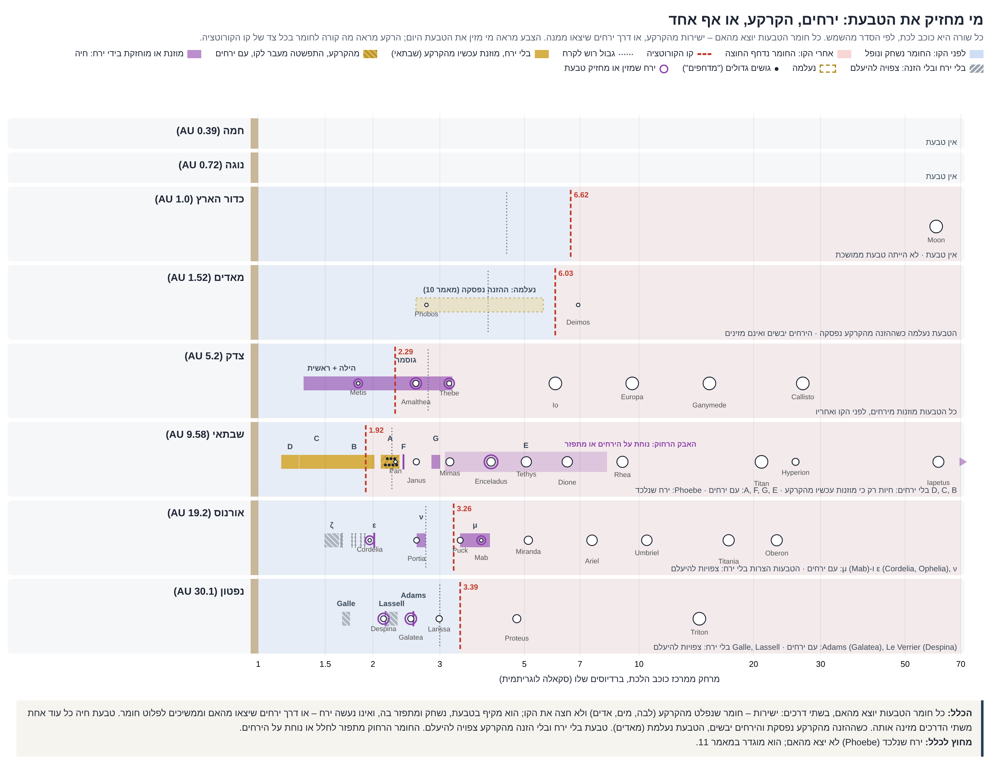
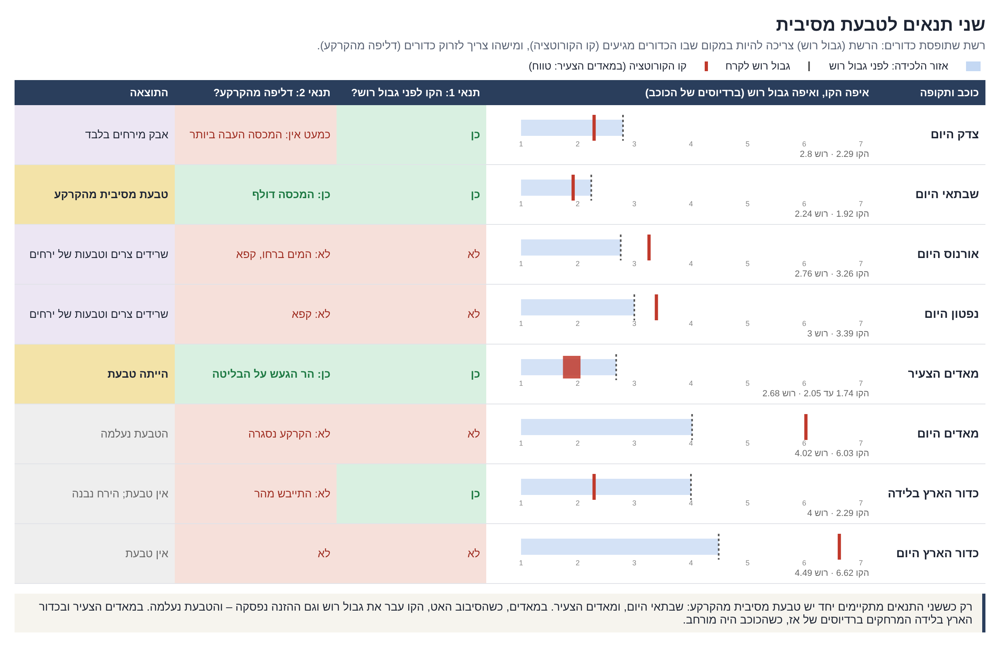

12. הטבעות
טבעת שוברת, שוחקת ומחזירה: מקור החומר, הדינמיקה והעקבות על הירחים ועל כוכב האם
תקציר
מאמר 11 קבע שטבעת אינה בונה ירחים. מאמר זה מפתח את העיקרון למנגנון שלם של טבעות: מאיפה מגיע החומר, איך הוא נע, מה הוא עושה לירחים שעוברים בו, ואילו עקבות הוא משאיר על כוכב האם.
המאמר טוען ארבע טענות:
1. החומר מקורי. הטבעת עשויה מחומר של הכוכב עצמו, שדולף מבפנים באזור קו הקורוטציה ונלכד בתוך גבול רוש. אין היא עשויה מאבק חלל. טבעות שבתאי הן 95%–99% קרח מים, מסתן כ- ק"ג, והן שוכבות בדיסקה דקה במישור המשווה. אבק שמגיע מכל הכיוונים אינו יכול ליצור מבנה כזה.
2. טבעת שוברת, שוחקת ומחזירה, ואינה בונה. רוב החומר חוזר פנימה אל הכוכב, ורק מעט נדחף החוצה. בשבתאי הזרימה נמדדה ישירות: בין 432 ל-45,000 ק"ג בשנייה נופלים מהטבעת אל הכוכב. בקצב כזה הטבעת הייתה נעלמת תוך 11 מיליון עד 1.1 מיליארד שנים, ולכן היא זרימה מתמדת שמוזנת מבפנים. לאורך 4.5 מיליארד שנים ההזנה הנדרשת היא בין 4 ל-415 מסות טבעת, אך רק חלק אחד ממיליון עד מאה אלף ממסת שבתאי. גם טבעת שנמצאת מחוץ לגבול רוש, כמו הטבעת של Quaoar, אינה מתגבשת לירח.
3. מיקום הטבעת נקבע ביחס לקו הקורוטציה. הטבעות של ארבעת ענקי הגז והקרח יושבות מתחת לקו הקורוטציה או סביבו, בין 0.5 ל-1.4 רדיוסי קורוטציה, באזור שבו חומר נופל פנימה. הטבעות של שלושת הגופים הקטנים שיש להם טבעות (Haumea, Chariklo, Quaoar) יושבות מעל הקו, בין 1.25 ל-2.2, ורובן סמוך לתהודה 1:3 בין הסיבוב להקפה (2.08). כשקו הקורוטציה נודד החוצה, אזור הטבעת הופך לאזור נפילה והטבעת נעלמת.
4. הטבעת משאירה סימן על הירח. ירח שעבר בטבעת נושא את סימנה, וסוג החומר קובע את הסימן: טבעת קרח סופחת חומר אל הירח (החגורות המשווניות של Pan, Atlas ו-Daphnis), וטבעת של חומר סיליקטי שוחקת אותו. דימוס שהה זמן רב בלב הטבעת של מאדים ונשחק כולו; פובוס יצא דרך שפתה התחתונה ונשחק מעט. הסימן תלוי גם בעובי הטבעת ביחס לקוטר הירח, במהירות החצייה ובכבידת הירח.
המאמר מסכם את החתימות שהטבעת משאירה בכוכב האם – בשבתאי הן נמדדו, ובמאדים הן נדרשות – ואת מקומה של השמש בפירוק הטבעת. הדרישות, התחזיות וקריטריוני ההפרכה מרוכזים בחלק L.
מה המאמר מציע
• טענה: טבעת פלנטרית היא שלב בזרימת חומר מהכוכב ובחזרה אליו. החומר דולף מבפנים, נלכד, נשבר ונשחק, ורובו חוזר כגשם טבעות. הטבעת קיימת כל עוד יש הזנה וכל עוד קו הקורוטציה נמצא בסמוך לה. היא אינה בונה ירחים, אבל היא משנה את הירחים שעוברים בה: מעגלת את מסלולם, דוחפת אותם החוצה, ומשאירה על פניהם סימן לפי סוג החומר.
• הגדלים המרכזיים: קו הקורוטציה ; גבול רוש לקרח ; קצב גשם הטבעות בשבתאי 432–45,000 ק"ג בשנייה; מסת טבעות שבתאי ק"ג.
• מה נדרש ומה יפריך: חלק L.
סביבת העבודה
| גודל | ערך | מקור |
|---|---|---|
| מסת טבעות שבתאי | ק"ג (כ-40% ממסת מימס) | Iess et al. 2019 |
| הרכב טבעות A ו-B | 95%–99% קרח מים | Cuzzi et al. 2010 |
| עובי הטבעות הצפופות | כ-10–30 מ'; טבעת E: אלפי ק"מ | Cuzzi et al. 2010 |
| גשם טבעות נייטרלי, אל קו המשווה | 4,800–45,000 ק"ג בשנייה | Waite et al. 2018 |
| גשם טבעות מיונן, לאורך קווי השדה | 432–2,870 ק"ג בשנייה | O'Donoghue et al. 2019 |
| קו הקורוטציה, ברדיוסים משווניים | צדק 2.24; שבתאי 1.85; אורנוס 3.24; נפטון 3.37 | חישוב (חלק A.3) |
| שקעים בדימוס מול פובוס (עומק חציוני לרוחב) | 1.9% מול 5.5% | Ernst et al. 2023; מאמר 10 |
PART Aמבוא: שני קווים סביב כל כוכב
A.1השאלה
לכל ארבעת ענקי הגז והקרח יש טבעות, אך הן שונות מאוד זו מזו: טבעות שבתאי מסיביות ובהירות, טבעות צדק דלילות ועשויות אבק, וטבעות אורנוס ונפטון צרות וכהות. לשלושה גופים קטנים בקצה מערכת השמש יש טבעות צפופות, ואחת מהן נמצאת הרחק מחוץ לגבול רוש. לכוכבי הלכת הפנימיים אין היום טבעות, אך למאדים הייתה טבעת בעבר [מאמר 10; Ćuk et al. 2020]. על ירחים לא נמצאה טבעת כלל.
מאמר 11 הגדיר את קו הקורוטציה כקו שסביבו נולדים ירחים, וקבע שטבעת היא אתר של שחיקה ולא של בנייה. מאמר זה שואל איך אותו קו, יחד עם גבול רוש, קובע היכן תהיה טבעת, ממה היא עשויה, כמה זמן היא חיה, ומה היא עושה לגופים שעוברים בה.
A.2קו הקורוטציה וגבול רוש
• קו הקורוטציה: המרחק שבו גוף שמקיף את הכוכב משלים הקפה בדיוק בזמן סיבוב הכוכב, . מתחת לקו, חומר מקיף מהר יותר מהסיבוב; הגאות שהוא מעורר בכוכב מפגרת אחריו ובולמת אותו, והוא יורד פנימה. מעל הקו הגאות מקדימה אותו ודוחפת אותו החוצה [מאמר 11, A.6].
• גבול רוש: המרחק שמתחתיו כוח הגאות של הכוכב גובר על הכבידה העצמית של גוף רך, ולכן גוף כזה אינו יכול להתגבש. עבור חלקיקי קרח, , כאשר היא צפיפות הכוכב.
A.3היכן יושבות הטבעות
הטבלה מציגה את מיקום הטבעות ואת גבול רוש ביחידות של רדיוס הקורוטציה. כך אפשר להשוות כוכבים בגדלים ובקצבי סיבוב שונים על אותו סרגל.
| גוף | קו הקורוטציה (ק"מ) | הטבעות (ק"מ) | הטבעות ביחידות | גבול רוש לקרח ביחידות | מיקום ביחס לקו |
|---|---|---|---|---|---|
| צדק | 160,000 | 92,000–226,000 (הילה, ראשית, גוסמר) | 0.57–1.41 | 1.25 | סביב הקו |
| שבתאי | 111,600 | 66,900–136,800 (D עד A) | 0.60–1.23 | 1.21 | סביב הקו; הקצה החיצוני בגבול רוש |
| אורנוס | 82,700 | 41,800–51,100 | 0.51–0.62 | 0.85 | מתחת לקו |
| נפטון | 83,500 | 41,900–62,900 | 0.50–0.75 | 0.89 | מתחת לקו |
| Haumea | 1,104 | 2,287 | 2.07 | 2.27 | מעל הקו |
| Chariklo | 186 | 391; 405 | 2.10; 2.18 | 1.71 | מעל הקו |
| Quaoar | 2,020 | 2,520; 4,057 | 1.25; 2.01 | 0.83 | מעל הקו; שתיהן מחוץ לגבול רוש |
המספרים מראים שתי משפחות. הטבעות של ענקי הגז והקרח יושבות מתחת לקו הקורוטציה או סביבו, בתוך גבול רוש או על גבולו, באזור שבו חומר נופל אל הכוכב. בשבתאי הקצה החיצוני של טבעת A (136,800 ק"מ) נמצא כמעט בדיוק על גבול רוש לקרח (135,300 ק"מ). הטבעות של הגופים הקטנים יושבות מעל הקו, ורובן קרובות ל-2.08 רדיוסי קורוטציה – המרחק שבו חלקיק מקיף פעם אחת בזמן ששלושה סיבובים של הגוף מושלמים (תהודה 1:3) [Sicardy et al. 2019].


PART Bמקור החומר
B.1דליפה מבפנים
לפי מאמר 11, הדיפרנציאציה דוחקת מים וחומרים קלים מפנים הכוכב כלפי מעלה (עקרון המשאבה), ומעטה הגז סוגר עליהם (עקרון המכסה). המכסה סוגר, אך אינו אטום לחלוטין: מעט חומר דולף אל אזור קו הקורוטציה, נלכד בתוך גבול רוש ומזין את הטבעת. כך הטבעת מתחדשת כל עוד הדיפרנציאציה נמשכת וכל עוד יש מוצא.
במאדים ההזנה עברה דרך הר הגעש שעל הבליטה. כל עוד הקרקע הייתה רפויה והניחה לחומרים נדיפים לצאת, הטבעת הוזנה במסות גדולות. ככל שהסיבוב האט, המיון התקדם והקרום התקרר והתעבה, הכליאה נעשתה מלאה, ההזנה פסקה והטבעת התייבשה [מאמר 10].
B.2מדוע אין זה אבק חלל
• טוהר: טבעות A ו-B הן 95%–99% קרח מים [Cuzzi et al. 2010]. אבק בין-פלנטרי הוא תערובת כהה של סיליקטים, פחמן ומתכות. אילו הטבעת נבנתה ממנו, היא הייתה כהה מראשיתה.
• הזיהום פועל מבחוץ: Cassini מדדה את קצב נפילת המיקרו-מטאורואידים על הטבעות [Kempf et al. 2023]. אבק החלל מלכלך טבעת קיימת ואינו החומר שבנה אותה. ההבדל בין טבעת C הכהה לבין טבעות A ו-B הבהירות מוסבר באותו אופן: באותו קצב זיהום, טבעת דלילה מתלכלכת מהר יותר [Cuzzi & Estrada 1998].
• מסה וצורה: ק"ג שוכבים בדיסקה שעוביה עשרות מטרים, במישור המשווה. אבק שמגיע מכל הכיוונים אינו נושא תנע זוויתי משותף ואינו יכול לשקוע לדיסקה אחת כזו. נדרש מקור אחד שמסתובב יחד עם הכוכב.
• ההרכב תואם את המכסה: בשבתאי, שבו מכסה עבה כולא את המים, הטבעת קרח כמעט טהור. באורנוס ובנפטון, שבהם המכסה דק והמים ברחו דרך הקו [מאמר 11, A.9], הטבעות צרות וכהות. בצדק, שבו המכסה העבה ביותר, הטבעות הן אבק דליל שמוזן מהירחים הפנימיים [Owen et al. 1979]. במאדים הטבעת הייתה עשויה אדים מעובים וחומר מהקרום [מאמר 10].
B.3ירח שמזין טבעת
טבעת E של שבתאי מוזנת בסילונים שיוצאים מאנקלדוס. בצדק, הירחים הפנימיים Metis, Adrastea, Amalthea ו-Thebe משחררים את האבק של הטבעות. הכיוון תמיד אחד: ירח מזין טבעת, וטבעת אינה מזינה ירח.
B.4שתי דרכים, ומתי טבעת חיה
כל חומר הטבעות יוצא מהאם, בשתי דרכים:
• ישירות: חומר שנפלט מהקרקע – לבה, מים, אדים ואבק מהקרום – ולא חצה את קו הקורוטציה. הוא מקיף בטבעת, נשחק ומתפזר בה, ואינו נעשה ירח. כך מוזנות טבעות D, C ו-B של שבתאי, שאין בהן ירחים, וכך הוזנה הטבעת של מאדים [מאמר 10].
• דרך ירחים: ירחים שיצאו מהאם וממשיכים לפלוט חומר. אנקלדוס מזין את טבעת E בסילוני מים; Metis, Adrastea, Amalthea ו-Thebe מזינים את כל טבעות צדק באבק שמתנפץ מפגיעות [Burns et al. 1999]; Mab מזין את טבעת μ של אורנוס.
טבעת חיה כל עוד אחת משתי הדרכים מזינה אותה. ירח מזין טבעת רק אם הוא פולט חומר; ירחים יבשים, כמו פובוס ודימוס, אינם מזינים. כשההזנה מהקרקע נפסקת והירחים יבשים, הטבעת נעלמת – כך נעלמה הטבעת של מאדים. טבעת שאין לה ירח ואין לה הזנה מהקרקע עברה את שלב הירחים, וצפויה להיעלם (F.3).
החומר הרחוק מתפזר לחלל או נוחת על הירחים. הגז הטעון שמסתובב עם הכוכב דוחף אבק שמעבר לקו החוצה; רחוק מהכוכב, אור השמש מאט את האבק והוא נודד פנימה. אבק טבעת Phoebe נוחת על יאפטוס ויוצר את צדו הכהה [Verbiscer et al. 2009], ואבק טבעת E מצפה את מימס, טתיס, דיונה וריאה [Verbiscer et al. 2007].
ירח שנלכד אינו חלק מהכלל: הוא לא יצא מהאם, והכלל לזיהויו הוגדר במאמר 11. טבעת Phoebe, ירח נלכד, היא מחוץ לתחום.

B.5שני תנאים לטבעת מסיבית
לא לכל כוכב שיש לו ירחים יש טבעת מסיבית. שתי שאלות פשוטות קובעות אם לכוכב תהיה טבעת מסיבית שמוזנת מהקרקע. דימוי: רשת שתופסת כדורים. הרשת צריכה להיות במקום שבו הכדורים מגיעים, ומישהו צריך לזרוק כדורים.
תנאי 1 – הרשת במקום הנכון: האם קו הקורוטציה נמצא לפני גבול רוש? חומר שדולף מהקרקע מגיע לאזור קו הקורוטציה (B.1). אם הקו נמצא לפני גבול רוש, החומר נכנס לאזור שבו כוח הגאות מונע ממנו להתגבש, והוא נשאר טבעת. אם הקו נמצא מעבר לגבול רוש, החומר שמגיע אליו כבר אינו נלכד. מיקום הקו וגבול רוש תלויים שניהם בצפיפות הכוכב, וכשמחלקים אחד בשני הצפיפות מתבטלת:
כאשר היא יממת הכוכב ו- ק"ג למ"ק. מכאן הניסוח הפשוט של התנאי: הקו נמצא לפני גבול רוש אם ורק אם היממה קצרה מכ-13.4 שעות – לכל כוכב, בכל גודל ובכל צפיפות. המהירות היא אפוא התנאי עצמו, והכבידה אינה משנה אותו: לצדק הכבידה החזקה ביותר, ולשבתאי כבידה כמעט כמו של כדור הארץ.
תנאי 2 – מישהו זורק: האם יש דליפה מהקרקע? מכסה הגז אינו סוגר הכל, והשכבה החיצונית לא קפאה ולא התייבשה.
| כוכב ותקופה | יממה (שעות) | הקו | גבול רוש | תנאי 1 | תנאי 2 | התוצאה |
|---|---|---|---|---|---|---|
| שבתאי היום | 10.6 | 1.92 | 2.24 | כן | כן: המכסה דולף | טבעת מסיבית מהקרקע |
| מאדים הצעיר | 7–9 | 1.74–2.05 | 2.68 | כן | כן: הר הגעש על הבליטה | הייתה טבעת |
| צדק היום | 9.9 | 2.29 | 2.80 | כן | כמעט אין: המכסה העבה ביותר | אבק מירחים בלבד |
| כדור הארץ בלידה | 5.8 | 2.29 | 4.00 | כן | לא: התייבש מהר | אין טבעת; הירח נבנה |
| אורנוס היום | 17.2 | 3.26 | 2.76 | לא | לא: המים ברחו, קפא | שרידים צרים וטבעות של ירחים |
| נפטון היום | 16.1 | 3.39 | 3.00 | לא | לא: קפא | שרידים צרים וטבעות של ירחים |
| מאדים היום | 24.6 | 6.03 | 4.02 | לא | לא: הקרקע נסגרה | הטבעת נעלמה |
| כדור הארץ היום | 23.9 | 6.62 | 4.49 | לא | לא | אין טבעת |
המרחקים ברדיוסים של הכוכב; במאדים הצעיר ובכדור הארץ בלידה – ברדיוסים של אז, כשהכוכב היה מורחב. גבול רוש לקרח חושב לפי , עם צפיפות הכוכב באותה תקופה.
מה רואים: רק כששני התנאים מתקיימים יחד יש טבעת מסיבית מהקרקע – שבתאי היום, ומאדים הצעיר. לצדק יש סיבוב מהיר, אבל המכסה העבה כמעט אינו דולף. לכדור הארץ בלידה היה סיבוב מהיר, אבל הוא התייבש. אורנוס ונפטון מסתובבים לאט מדי – יממה של 16–17 שעות – והקו שלהם מעבר לגבול רוש, והם גם קפאו; נשארו להם רק טבעות צרות. במאדים רואים את שני התנאים נעלמים בזה אחר זה: כשהסיבוב האט, הקו עבר את גבול רוש, וגם ההזנה מהקרקע נפסקה – והטבעת נעלמה.
כך מתיישב גם המרחק מהשמש: בדומה לקשת הלידות של הירחים [מאמר 11], גם הטבעות מגיעות לשיא בשבתאי. קרוב לשמש הכוכבים מתייבשים, ורחוק ממנה הם קופאים; בשני המקרים אין דליפה.

PART Cטבעת שוברת ושוחקת, ואינה בונה
C.1בתוך גבול רוש
בתוך גבול רוש כוח הגאות גובר על הכבידה העצמית, ולכן חלקיקים אינם יכולים להתגבש לגוף אחד. גוש גדול שנכנס לאזור נקרע ונשחק בהתנגשויות עד לחצץ ואבק. טבעת A של שבתאי מסתיימת בדיוק בגבול רוש לקרח, ומעבר לו אין ירח שהתגבש ממנה.
C.2גם מחוץ לגבול רוש
הטבעת החיצונית של Quaoar נמצאת ב-4,057 ק"מ, פי 2.4 מגבול רוש לקרח. לפי ההבנה המקובלת חומר במרחק כזה אמור להתגבש לירח בתוך עשרות שנים, אבל הטבעת צפופה וקיימת [Morgado et al. 2023]. בספרות זו תעלומה. לפי המנגנון זו התוצאה הצפויה: טבעת אינה בונה ירחים, גם כשגבול רוש אינו מונע זאת. הטבעות של Chariklo נמצאות אף הן מעט מחוץ לגבול רוש.
C.3ירחי הטבעות
הירחים הזעירים שבתוך טבעות שבתאי ובשוליהן – Pan, Daphnis, Atlas, Prometheus, Pandora, Janus ו-Epimetheus – הם בעלי צפיפויות של 340–640 ק"ג למ"ק בלבד [Porco et al. 2007]. לפי מאמר 11 הם שרידים של ירחים שעברו שחיקה וליטוש בטבעת, ועליהם הצטבר חומר טבעת. הצטברות על גוף קיים איננה בניית ירח. המודל של Crida ו-Charnoz [2012], שבו ירחים מתגבשים מטבעת שמתפשטת אל מעבר לגבול רוש, נשען על חישוב ולא על תצפית.
C.4טבעת כאתר השמדה
Wisdom ושותפיו [2022] הציעו שטבעות שבתאי נוצרו מירח קדום שהתקרב, חצה את גבול רוש והתפרק. גם הצעה זו רואה בטבעת אתר של פירוק ולא של בנייה.
PART Dהדינמיקה: מה חוזר ומה יוצא
D.1רוב החומר חוזר פנימה
בטבעת, חלקיקים קרובים מקיפים מהר יותר מרחוקים. ההתנגשויות ביניהם הופכות אנרגיה מסלולית לחום, בעוד שהתנע הזוויתי הכולל נשמר. כדי לקיים את שני התנאים יחד, רוב המסה נעה פנימה ומעט ממנה נדחף החוצה ונושא איתו את התנע [Lynden-Bell & Pringle 1974]. הטבעת היא אפוא משפך: רוב החומר חוזר אל הכוכב.
D.2הקו מחלק
מה שמסתובב עם הכוכב בולם את החומר שמתחת לקו הקורוטציה ומפיל אותו פנימה, ודוחף החוצה את החומר שמעליו. על ירחים ועל גושים גדולים פועלת הגאות; על אבק טעון פועל השדה המגנטי, שמסתובב עם הכוכב. טבעת צפופה ומסיבית מתנהגת בעיקר כגוף אחד שמתפשט (D.1). טבעת מעבירה גם תנע לירחים שבשוליה ודוחפת אותם החוצה [Goldreich & Tremaine 1980]. כך דחפה הטבעת של מאדים את דימוס החוצה, ושפתה הפנימית הגזית החזיקה את פובוס על קו הקורוטציה והובילה אותו החוצה יחד עם הקו, עד שהתייבשה בסביבות 19,000 ק"מ [מאמר 10].
D.3שבתאי: זרימה מתמדת
Cassini מדדה את החומר שנופל מהטבעות אל שבתאי בשני ערוצים: חומר נייטרלי שזורם אל קו המשווה, 4,800–45,000 ק"ג בשנייה [Waite et al. 2018], וחומר מיונן שזורם לאורך קווי השדה המגנטי, 432–2,870 ק"ג בשנייה [O'Donoghue et al. 2019].
| קצב הנפילה (ק"ג בשנייה) | הזמן עד שהטבעת מתרוקנת ללא הזנה | ההזנה הדרושה לאורך 4.5 מיליארד שנים | כחלק ממסת שבתאי |
|---|---|---|---|
| 432 | 1.1 מיליארד שנים | 4 מסות טבעת | |
| 2,870 | 170 מיליון שנים | 26 מסות טבעת | |
| 4,800 | 100 מיליון שנים | 44 מסות טבעת | |
| 45,000 | 11 מיליון שנים | 415 מסות טבעת |
ללא הזנה הטבעת הייתה נעלמת תוך זמן קצר בהרבה מגיל מערכת השמש, ולכן בספרות נקבע שהטבעות צעירות [Iess et al. 2019; Kempf et al. 2023]. לפי המנגנון, הטבעת היא זרימה מתמדת בשיווי משקל: היא מתחדשת מלמטה ומתרוקנת כגשם. היא נראית צעירה כי החומר בה מתחלף כל הזמן, אף שהתהליך עתיק. הדרישה במצב יציב: קצב הדליפה מגוף האם אל הטבעת שווה לקצב גשם הטבעות. ההזנה הנדרשת לאורך כל חיי שבתאי היא פחות מחלק אחד ממאה אלף ממסתו, ולכן היא אפשרית.
D.4לאן הלך התנע: ירחים או מים
כשקו הקורוטציה של כוכב זז החוצה, הכוכב איבד תנע זוויתי. השאלה היא מי לקח אותו: הירחים, או מים שעזבו דרך הקו. החישוב משווה את התנע שאבד לתנע המסלולי של הירחים הסדירים היום. מקדם מומנט ההתמד: כ-0.22 לאורנוס וכ-0.23 לנפטון.
| כוכב | שינוי היממה | התנע שאבד | התנע של הירחים | חלק הירחים | מים שנדרשים דרך הקו |
|---|---|---|---|---|---|
| אורנוס | 8.3 → 17.2 שעות | 1% | ק"ג, כ-2.9% מהמסה | ||
| נפטון | 7.3 → 16.1 שעות | 0.003% | ק"ג, כ-3.1% מהמסה | ||
| צדק | 9.8 → 9.9 שעות | הירחים נושאים כ-1% מתנע הסיבוב | כולו | לא נדרשים | |
| שבתאי | 10.4 → 10.6 שעות | הירחים נושאים כ-1.4% מתנע הסיבוב | כולו | לא נדרשים | |
התנע ביחידות ק"ג·מ²/שנייה. כמות המים מחושבת למים שעוזבים מהקו של אז, ב-2 רדיוסים [מאמר 11].
• אורנוס ונפטון: הירחים קטנים מדי; את התנע לקחו המים. המים לא התארגנו חזרה לירחים: כל הירחים הסדירים של אורנוס יחד שוקלים ק"ג, והמים שעזבו שקלו פי 280 מזה. אילו המים היו מתגבשים לירחים, הירחים היו מחזיקים את התנע. המים נפלטו אפוא החוצה, אל החלל.
• צדק ושבתאי: הקו כמעט לא זז, והירחים לבדם מסבירים את התנע הקטן שעבר. אין צורך במים שבורחים, בהתאם למכסה העבה. גם הטבעות אינן נושאות תנע משמעותי: מסת טבעות שבתאי היא כחלק אחד מעשרת אלפים ממסת ירחיו.
• ירח שמחזיר לעצמו מים: רוב גרגרי הקרח בסילונים של אנקלדוס נופלים חזרה על פניו כשלג, ורק חלק קטן בורח לטבעת E [Kempf et al. 2010].
למה דווקא הרחוקים איבדו מים
לכאורה היה מצופה שהכוכבים הקרובים לשמש יאבדו מים, והרחוקים והקרים ישמרו אותם. אצל ענקי הגז קורה ההפך, משלוש סיבות:
1. המכסה. המרחק מהשמש קבע כמה מימן והליום אסף כל כוכב לפני שהדיסקה התפזרה [מאמר 11]. רחוק מהשמש החומר המוצק מצטבר לאט, ועד שהגוף הפנימי גדל מספיק כדי למשוך גז, רוב הגז כבר נעלם. לכן המכסה של צדק (90%–97% גז) ושל שבתאי (70%–85%) עבה, והמכסה של אורנוס ונפטון (10%–20%) דק. מכסה עבה כולא את המים; מכסה דק מניח להם לצאת.
2. מהירות הבריחה. מהירות הבריחה היא הסף: המהירות המינימלית שחומר צריך כדי לעזוב את הכוכב ולא ליפול חזרה. ככל שהסף נמוך יותר, קל יותר לברוח – כמו לצאת מבור רדוד לעומת בור עמוק. בצדק הסף 59.5 ק"מ בשנייה ובשבתאי 35.5, ובאורנוס ובנפטון רק 21.3 ו-23.5.
3. היציאה מכנית, לא חום. המים לא התאדו. הם הגיעו לקו הקורוטציה בזמן שהכוכב הסתובב מהר (יממה של 7–8 שעות), ומעבר לקו נדחפו החוצה. לכן גם כאן מה שקובע הוא הסיבוב, לא הטמפרטורה.
הקור אינו מפרק מים. מים מתפרקים בעיקר מאור על-סגול של השמש, שחזק קרוב אליה – כך איבדה נוגה את מימיה. רחוק מהשמש מים קופאים לקרח. קרוב לשמש כוכבים מתייבשים מהחום ומהאור; אצל ענקי הגז מה שקובע הוא המכסה. אלה שני מנגנונים שונים.
גודל הירחים ביחס לכוכב
| מערכת | מסת כל הירחים הסדירים, כחלק ממסת הכוכב |
|---|---|
| כדור הארץ | 1.2% |
| צדק | 0.021% |
| שבתאי | 0.025% |
| אורנוס | 0.010% |
| נפטון (בלי טריטון, שנלכד) | 0.00005% |
| מאדים | 0.000002% |
PART Eהמיון בטבעת
E.1מיון בהתנגשויות, לא בשקיעה
בתוך כוכב, חומר צפוף שוקע וחומר קל צף. בטבעת זה אינו קורה: חלקיק צפוף וחלקיק קל באותו מרחק מקיפים באותה מהירות. המיון בטבעת נעשה בהתנגשויות. לחומרים שונים כוח שונה להזיז זה את זה, כמו כביש שנשאר נקי משום שהמכוניות זורקות את החלקיקים הקטנים לצדדים. גוף כבד וקשיח שומר על מסלולו, וחלקיק קל או רך מקבל את הבעיטה, נזרק לצד ונשחק.
E.2מה נמדד
• "מדחפים": בטבעת A צילמה Cassini עשרות מבנים בצורת מדחף. במרכז כל אחד מהם גוף בקוטר של כמאה מטרים, ומשני צדיו פסים ריקים מחומר באורך של כמה קילומטרים [Tiscareno et al. 2006]. זו התצפית הישירה של הכביש: גוף קשיח מפנה לעצמו נתיב ודוחק את החלקיקים הקלים הצידה. המדחפים נמצאו בטבעת A, מעבר לקו הקורוטציה, שם החומר אינו נופל אל הכוכב והגושים שורדים.
• עובי: בטבעות הצפופות הגושים, בגודל סנטימטרים עד מטרים, שוכבים בשכבה של כ-10 מטרים. חלקיקים קטנים מקבלים בהתנגשויות מהירויות אקראיות גדולות יותר ומתפזרים לשכבה עבה יותר.
• התפלגות הגדלים: מספר הגושים יורד עם הגודל לפי חוק חזקה, כ- [Zebker et al. 1985], כצפוי ממטחנה שמרסקת גושים.
• אורנוס: טבעות צרות של גושים בגודל סנטימטרים עד מטרים, וביניהן רצועות של אבק דק.
E.3אלמנט הזמן
גודל הגוש מעיד על גילו בטבעת: גוש גדול הוא חדש, משום שעוד לא נשחק. גושים בגודל של ירחים קטנים נכנסים לטבעת, מתפרקים בחלקה האמצעי, ונשחקים לאבק. לפי D.1 רוב האבק נופל אל הכוכב, ומעט ממנו נדחף החוצה. הטבעת היא אפוא מסוע: גוש גדול נכנס, ואבק יוצא. מכאן תחזית: הגופים הגדולים בטבעת יתרכזו במקום שבו היא מוזנת.
PART Fמחזור החיים של טבעת
F.1נדידת הקו מעלימה טבעות
מיקום קו הקורוטציה תלוי בקצב סיבוב הכוכב. כשהכוכב מאט – בגלל הגאות של ירח גדול או בגלל מים שבורחים דרך הקו ונושאים תנע – הקו נודד החוצה. חומר שהיה על הקו או מעליו נמצא עכשיו מתחתיו, הגאות בולמת אותו, והוא נופל. אם באותו זמן ההזנה פוסקת, הטבעת מתרוקנת ונעלמת.
F.2השלבים
1. הזנה: הקו קרוב, הדיפרנציאציה פעילה, וחומר דולף ונלכד. הטבעת מסיבית (שבתאי היום; מאדים הצעיר).
2. דעיכה: המיון מתקדם, הקרום מתעבה או המכסה דולף, ההזנה פוחתת, והקו נודד החוצה. נשארות טבעות צרות מתחת לקו (אורנוס ונפטון).
3. היעלמות: ההזנה פסקה והטבעת נפלה. נשארים הירח שחצה את הקו והחומר שנפל על הכוכב (מאדים: האבק ופובוס הנופל [מאמר 10]).
בכדור הארץ לא יכלה להתקיים טבעת ממושכת: האגס שבנה את הירח סחף את הרצועה המשוונית שבה הייתה נוצרת, ואסף את החומר שלה אל הירח [מאמר 10].
F.3טבעות שצפויות להיעלם
לפי הכלל של B.4, טבעת בלי ירח ובלי הזנה מהקרקע צפויה להיעלם:
| כוכב | טבעות עם ירח | טבעות בלי ירח | הקריאה |
|---|---|---|---|
| שבתאי | A (Pan, Daphnis), F (Prometheus, Pandora), G (Aegaeon), E (אנקלדוס) | D, C, B | D, C ו-B חיות רק כי הן מוזנות עכשיו מהקרקע; גשם הטבעות שנמדד (D.3) מראה שבלי הזנה הן היו נעלמות |
| אורנוס | ε (Cordelia, Ophelia), ν (בין Portia ל-Rosalind), μ (Mab) | ζ, 6, 5, 4, α, β, η, γ, δ | צפויות להיעלם. בספרות שאלה פתוחה מה מחזיק אותן; ירחים קטנים שיחזיקו אותן לא נמצאו |
| נפטון | Adams (Galatea), Le Verrier (Despina) | Galle, Lassell | צפויות להיעלם |
| צדק | כולן | — | חיות כל עוד הירחים הפנימיים פולטים אבק |
| מאדים | — | הטבעת של העבר | נעלמה כשההזנה מהקרקע נפסקה; הירחים יבשים |
PART Gסימן הטבעת על הירח
G.1הכלל
ירח סיליקטי חלק לחלוטין מעיד ששהה בטבעת.
דימוס הוא הגוף הקטן החלק ביותר שנצפה בקרבת מאדים. מדידה על מודלי הצורה של Ernst et al. [2023], באותה שיטה לשני הירחים, מראה שהעומק החציוני של השקעים בדימוס הוא 1.9% מרוחבם, לעומת 5.5% בפובוס. 84% מהשקעים בדימוס רדודים מ-6% מרוחבם, לעומת 56% בפובוס [מאמר 10, J.1]. מסלולו כמעט מעגל מושלם (אקסצנטריות 0.0003). מסלול מעגלי ומשווני לצד פנים חלקות הם סימניו של גוף ששהה זמן רב בלב הטבעת. פובוס יצא דרך השפה התחתונה של הטבעת הדועכת, ולכן נשחק מעט ושמר על החריצים. לכדור הארץ לא הייתה טבעת ממושכת, ולירח רשומת מכתשים רוויה.
בין כוכבי הלכת דימוס הוא המקרה היחיד של ירח סיליקטי חלק לחלוטין, ולכוכב שלו אין טבעת היום. ירחי הקרח החלקים – אירופה, אנקלדוס וטריטון – פעילים גאולוגית, ולכן אינם נכללים בכלל.
G.2סוג החומר קובע
טבעת קרח סופחת; טבעת סיליקטית שוחקת. גרגרי קרח קרים מכוסים בשכבת כפור ונדבקים זה לזה במגע איטי [Bridges et al. 1984]. כך נבנו הרכסים המשווניים של Pan, Atlas ו-Daphnis, שעומדים מעל הגוף עצמו ומעניקים לו צורת "צלחת" [Charnoz et al. 2007]. הטבעת של מאדים הייתה עשויה אדים מעובים וחומר סיליקטי מהקרום. גרגרים סיליקטיים קשים ופועלים כנייר זכוכית, ולכן דימוס נשחק ולא צבר.
G.3הכבידה
ירח גדול אוחז בכבידתו את החומר שנופל עליו בקו המשווה. בין הירחים הקטנים הכבידה אינה מכריעה, וסוג החומר הוא שמכריע:
| ירח | קוטר (ק"מ) | צפיפות (ק"ג למ"ק) | כבידה על פני השטח (מ'/שנ²) | הטבעת | הסימן |
|---|---|---|---|---|---|
| Methone | 2.9 | 310 | 0.0001 | קרח (קשת ליד טבעת G) | חלק, מצופה |
| Daphnis | 7.6 | 340 | 0.0004 | קרח (A) | רכס משווני |
| Pan | 28 | 400 | 0.0016 | קרח (A) | רכס משווני |
| Atlas | 30 | 460 | 0.0019 | קרח (שולי A) | רכס משווני |
| דימוס | 12.4 | 1,471 | 0.0025 | סיליקטית ואדים | נשחק כולו |
| פובוס | 22.2 | 1,860 | 0.0058 | שפה גזית דועכת | נשחק מעט |
| יאפטוס | 1,469 | 1,088 | 0.22 | ? | רכס משווני (G.6) |
לדימוס כבידה חזקה יותר מזו של Pan ו-Atlas, ובכל זאת עליהם הצטבר חומר ועל דימוס לא. ההבדל הוא בחומר.
G.4עובי הטבעת
הירח והטבעת שוכבים באותו מישור, ולכן המגע מתרכז בקו המשווה של הירח. היחס בין קוטר הירח לעובי הטבעת קובע את צורת הסימן:
| יחס | מה קורה | הסימן | דוגמה |
|---|---|---|---|
| הירח שקוע בטבעת מכל עבריו | חלקות מלאה | דימוס, Methone | |
| הקטבים בולטים מעל הטבעת ומתחתיה | חגורה משוונית רחבה | Pan, Atlas, Daphnis | |
| הטבעת היא חוט דק סביב כדור גדול | רכס צר, או סימן שנמחק | יאפטוס (?) |
עבור דימוס, שיצא בקוטר של 14–22 ק"מ [מאמר 10, טבלה 18], חלקות מלאה מחייבת טבעת שעוביה עשרות קילומטרים לפחות. טבעת של אדים מעובים ואבק, כמו זו של מאדים, עבה בהרבה מטבעת של גושי קרח, ולכן תואמת דרישה זו.
G.5מהירות החצייה
קצב הנדידה הגאותית של ירח גדל עם מסתו. ירח קטן מתרחק לאט, שוהה זמן רב בטבעת, ונושא סימן בולט. ירח גדול נדחף החוצה מהר, חוצה את הטבעת בזמן קצר, ונושא סימן שטחי שקל למחוק. גם מהירות המפגש משפיעה: ירח שנע יחד עם חלקיקי הטבעת מקבל מגע עדין, וירח שהטבעת חולפת עליו במהירות נשחק.
G.6יאפטוס: שאלה פתוחה
ליאפטוס רכס בקו המשווה, ברוחב של כ-20 ק"מ, בגובה של עד 20 ק"מ ובאורך של כ-1,300 ק"מ. שני הסברים אפשריים: (א) הרכס נחרת כשיאפטוס חצה את הטבעת של שבתאי סמוך לאתר הלידה שלו, ב-2.53 רדיוסים [מאמר 11]; (ב) הרכס נוצר מטבעת משנה שהקיפה את יאפטוס עצמו וקרסה עליו [Ip 2006; Levison et al. 2011; Dombard et al. 2012]. ההסבר השני סותר את הכלל שלירחים אין טבעות (J.1), אך מוכר בספרות. השאלה נשארת פתוחה (חלק M).
PART Hחתימות בכוכב האם
H.1שבתאי: נמדד
בצלילות האחרונות של Cassini ב-2017 טסה החללית בין הכוכב לטבעת הפנימית ומדדה את החומר שנופל:
• הרכב: מים, מתאן, אמוניה, פחמן חד-חמצני, חנקן ופחמימנים, שזורמים מהטבעת אל קו המשווה [Waite et al. 2018], וגרגרי סיליקט ננומטריים [Hsu et al. 2018].
• רצועות ביונוספירה: רצועות כהות באור תת-אדום בקווי רוחב 25°–55°. מולקולות מים טעונות זורמות מהטבעת לאורך קווי השדה המגנטי ומנטרלות את יוני המימן [O'Donoghue et al. 2013].
לטבעת יש אפוא שתי חתימות בכוכב האם: חומר נייטרלי שנופל בקו המשווה, וחומר טעון שנופל בקווי הרוחב הבינוניים, משני צדי קו המשווה.
H.2מאדים: נדרש
כשהטבעת של מאדים התייבשה, החומר שבה – אדים ומעט חומר מהקרום שנטחן לאבק – נפל על מאדים, והוא מקור האבק המאדימי [מאמר 10]. מכאן הכיוונים לחיפוש:
• משקעים משווניים ללא מקור זרימה: תצורת Medusae Fossae היא מרבץ דליל ועבה לאורך קו המשווה. ההסבר המקובל הוא אפר געשי [Ojha & Lewis 2018].
• יחס איזוטופים: מימן בעל יחס D/H שונה מהסביבה ודומה לזה של פובוס ודימוס.
• שכבות געשיות בהר שארפ: ChemCam זיהתה במכתש Gale עשרות אבנים געשיות [Cousin et al. 2017], ושכבת סמן כהה וקשה משתרעת לרוחב ההר.
• רצועות בקווי רוחב בינוניים: אם למאדים היה שדה מגנטי בזמן הטבעת, החומר הטעון היה נוחת ברצועות סימטריות משני צדי קו המשווה, כמו בשבתאי.
H.3מבחן שלא עבר: Atacama
ב-25 באפריל 2026 קדחה Curiosity בגוש שטוח בשם Atacama, כ-45 ס"מ ו-13 ק"ג, שלא היה מחובר לקרקע. הגוש נתקע על המקדח ושוחרר רק כעבור שישה ימים [NASA/JPL 2026]. גושים מנותקים כאלה פזורים באזור, במכתש Gale, כ-320 ק"מ מקו המשווה. נבדקה האפשרות שהם שרידי טבעת. בפועל, הגוש שייך ליחידת הסולפטים השכבתית של הר שארפ: משקע בעל שכבות דקות, עשיר במלחי סולפט ממוימים, בהרכב זהה לשכבות שמתחתיו. הוא אינו שריד טבעת. המבחן מגדיר את הקריטריונים לשריד אמיתי:
| מדד | מה נמצא ב-Atacama | מה נדרש משריד טבעת |
|---|---|---|
| סוג | משקע שכבתי שהתאדה ממים | חומר געשי או ספוגי, ללא שכבות מים |
| מינרלים | סולפטים ממוימים | מינרלים יבשים, או כאלה שעברו חימום |
| מעטפת | סדקי התייבשות | קרום התכה מכניסה לאטמוספרה |
| קשר לסביבה | הרכב זהה לשכבה שמתחתיו | הרכב זר לשכבה המקומית |
PART Iהטבעת והשמש
• "חישורים": רצועות כהות שמופיעות לרוחב טבעת B, מסתובבות איתה ונעלמות אחרי שעות [Smith et al. 1981]. הן עונתיות ומתרבות סביב השוויון, כשהשמש מאירה את הטבעת בזווית שטוחה [Mitchell et al. 2006]. גרגרים זעירים נטענים חשמלית ומרחפים מעל מישור הטבעת.
• גשם מיונן: קרינת העל-סגול של השמש מיננת מולקולות מים בטבעת, והן נלכדות בקווי השדה ונופלות אל הכוכב (H.1). השמש מאיצה אפוא את התרוקנות הטבעת.
• גרר קרינה: אור השמש מאט גרגרי אבק זעירים, והם נודדים פנימה (אפקט Poynting–Robertson).
PART Jירחים וגופים קטנים
J.1לירחים אין טבעות
לא נמצאה טבעת סביב אף ירח. החשד לטבעת סביב ריאה נבדק ונשלל [Tiscareno et al. 2010]. הכוח ששולט באזור הוא הכבידה של הכוכב, ולכן חומר שמשתחרר מירח מצטרף לטבעת הכוכב (B.3).
J.2גופים קטנים עם טבעות
לשלושה גופים קטנים טבעות צפופות: Chariklo [Braga-Ribas et al. 2014], Haumea [Ortiz et al. 2017] ו-Quaoar [Morgado et al. 2023; Pereira et al. 2023]. בניגוד לטבעות של ענקי הגז, כולן מעל קו הקורוטציה (טבלה A.3). ארבע מתוך חמש הטבעות נמצאות בין 2.01 ל-2.18 רדיוסי קורוטציה, סמוך לתהודה 1:3, ב-.
Haumea מסתובבת ב-3.9 שעות, וקצות הציר הארוך שלה (1,161 ק"מ) חורגים מקו הקורוטציה (1,104 ק"מ) [מאמר 11, K.2]. חומר שמשתחרר מהקצוות נמצא מעל הקו, נדחף החוצה, ונעצר בתהודה. לפי המנגנון, הטבעת של Haumea היא חומר שיוצא מגוף שנמצא על סף לידה, ואינו מתגבש לירח. Quaoar מסתובב לאט יותר, ופני השטח שלו רחוקים מהקו (3.6 רדיוסים), ולכן מקור הטבעות שלו נשאר פתוח. אבל הטבעת החיצונית שלו, הרחק מחוץ לגבול רוש ובכל זאת לא ירח, היא העדות החזקה ביותר לכך שטבעת אינה בונה (C.2).
PART Kסקירה לפי גוף
| גוף | מצב היום | מקור החומר | מיקום ביחס לקו | הקריאה לפי המנגנון |
|---|---|---|---|---|
| כדור הארץ | אין | — | — | האגס סחף את רצועת המשווה; לא הייתה טבעת ממושכת |
| מאדים | אין; הייתה | ישירות מהקרקע: אדים וחומר מהקרום, דרך הר הגעש שעל הבליטה | על הקו, שנדד החוצה | הוזנה, דחפה את דימוס, הובילה את פובוס; נעלמה כשההזנה נפסקה, לפני 3.7–3.5 מיליארד שנים; הירחים יבשים ואינם מזינים [מאמר 10] |
| צדק | אבק דליל | דרך ירחים: Metis, Adrastea, Amalthea, Thebe | סביב הקו | המכסה העבה ביותר; כמעט אין דליפה. חיות כל עוד הירחים פולטים אבק |
| שבתאי | מסיבית, קרח טהור | ישירות מהקרקע (D, C, B, A); דרך ירחים (F, G, E) | סביב הקו; A מעבר לקו, קצה A בגבול רוש | זרימה מתמדת: דליפה שווה לגשם. A היא טבעת האם שהתפשטה מעבר לקו |
| אורנוס | צרות וכהות | ε, ν, μ: ירחים; השאר: בלי ירח | מתחת לקו (0.51–0.62); μ מעבר לו | המכסה הדק, המים ברחו, הקו נדד ל-3.24. הטבעות בלי ירח צפויות להיעלם |
| נפטון | צרות, עם קשתות | Adams, Le Verrier: ירחים; Galle, Lassell: בלי ירח | מתחת לקו (0.50–0.75) | כמו אורנוס |
| Haumea | טבעת צפופה | קצות הגוף שחוצים את הקו | מעל הקו (2.07) | גוף על סף לידה; החומר נעצר בתהודה 1:3 |
| Chariklo | שתי טבעות | פתוח | מעל הקו (2.10–2.18) | בתהודה 1:3 |
| Quaoar | שתי טבעות | פתוח | מעל הקו (1.25; 2.01) | מחוץ לגבול רוש ואינה ירח |
PART Lדרישות, תחזיות וקריטריוני הפרכה
דרישות:
1. בשבתאי, קצב הדליפה מגוף האם אל הטבעת שווה לקצב גשם הטבעות.
2. חומר הטבעת זהה באיזוטופים להרכב השכבה החיצונית של גוף האם, ולא לשביטים או לאבק בין-פלנטרי.
3. לא התגבש ירח מחומר טבעת.
4. ירח סיליקטי חלק לחלוטין שהה בטבעת.
תחזיות:
1. MMX (מ-2027): בדימוס, שקעים עתיקים רדודים ובלויים והרכב זהה לזה של פובוס; בפובוס, שחיקה קלה בלבד.
2. גופים קטנים מוארכים ומהירים שקצותיהם קרובים לקו הקורוטציה יחזיקו טבעות סמוך ל-.
3. בטבעות שבתאי, הגופים הגדולים יתרכזו במקום שבו הטבעת מוזנת (E.3).
5. בטבעות הצרות של אורנוס שאין להן ירח, ובטבעות Galle ו-Lassell של נפטון, לא יימצא ירח שמזין אותן; משימה עתידית תמצא שהן הולכות ומתדלדלות.
4. במאדים יימצאו משקעים משווניים מחומר הטבעת, בהרכב שונה מהשכבה המקומית ודומה לזה של הירחים.
קריטריוני הפרכה:
1. תצפית ישירה בירח שמתגבש מחומר טבעת.
2. ירח סיליקטי חלק לחלוטין שמעולם לא שהה בסביבת טבעת.
3. טבעת שהרכבה האיזוטופי שונה מזה של גוף האם ותואם מקור חיצוני.
4. טבעת מסיבית שיושבת כולה הרחק מעל קו הקורוטציה של כוכב לכת גדול, ללא תהודה שמחזיקה אותה.
5. טבעת שאין לה ירח ואין לה הזנה מהקרקע, ונשמרת לאורך זמן בלי להתדלדל.
PART Mשאלות פתוחות
1. יאפטוס: הרכס נוצר בחציית הטבעת של שבתאי, או מטבעת משנה (G.6)?
2. Quaoar ו-Chariklo: מה מקור החומר בטבעות של גופים שפני השטח שלהם רחוקים מקו הקורוטציה?
3. צדק: האם יש דליפה מבפנים בנוסף לאבק מהירחים, או שהמכסה העבה סוגר לחלוטין?
4. מאדים: היכן נפל חומר הטבעת, ומה היה עוביה?
5. שבתאי: מדידה ישירה של קצב הדליפה אל הטבעת, להשוואה מול קצב גשם הטבעות.
DATA & CODEנתונים וקוד
מיקומי קו הקורוטציה וגבול רוש, כבידת פני השטח של הירחים, זמני ההתרוקנות וההזנה של טבעות שבתאי ואיור A.1 חושבו בסקריפט Python קצר מנוסחאות היסוד, על בסיס הנתונים המצוטטים. הסקריפט יצורף לחבילת הקוד של הסדרה.
• מאגר: Zenodo
• מזהה דיגיטלי (DOI): doi:10.5281/zenodo.22743615
REFERENCESמקורות
Braga-Ribas, F., Sicardy, B., Ortiz, J. L., et al. (2014). A ring system detected around the Centaur (10199) Chariklo. Nature, 508, 72–75.
Bridges, F. G., Hatzes, A., & Lin, D. N. C. (1984). Structure, stability and evolution of Saturn's rings. Nature, 309, 333–335.
Burns, J. A., Showalter, M. R., Hamilton, D. P., et al. (1999). The formation of Jupiter's faint rings. Science, 284, 1146–1150.
Charnoz, S., Brahic, A., Thomas, P. C., & Porco, C. C. (2007). The equatorial ridges of Pan and Atlas: terminal accretionary ornaments? Science, 318, 1622–1624.
Cousin, A., Sautter, V., Payré, V., et al. (2017). Classification of igneous rocks analyzed by ChemCam at Gale crater, Mars. Icarus, 288, 265–283.
Crida, A., & Charnoz, S. (2012). Formation of regular satellites from ancient massive rings in the Solar System. Science, 338, 1196–1199.
Ćuk, M., Minton, D. A., Pouplin, J. L. L., & Wishard, C. (2020). Evidence for a past Martian ring from the orbital inclination of Deimos. The Astrophysical Journal Letters, 896, L28.
Cuzzi, J. N., & Estrada, P. R. (1998). Compositional evolution of Saturn's rings due to meteoroid bombardment. Icarus, 132, 1–35.
Cuzzi, J. N., Burns, J. A., Charnoz, S., et al. (2010). An evolving view of Saturn's dynamic rings. Science, 327, 1470–1475.
Dombard, A. J., Cheng, A. F., McKinnon, W. B., & Kay, J. P. (2012). Delayed formation of the equatorial ridge on Iapetus from a subsatellite created in a giant impact. Journal of Geophysical Research: Planets, 117, E03002.
Ernst, C. M., Daly, R. T., Gaskell, R. W., et al. (2023). High-resolution shape models of Phobos and Deimos from stereophotoclinometry. Earth, Planets and Space, 75, 103.
Goldreich, P., & Tremaine, S. (1980). Disk–satellite interactions. The Astrophysical Journal, 241, 425–441.
Hsu, H.-W., Schmidt, J., Kempf, S., et al. (2018). In situ collection of dust grains falling from Saturn's rings into its atmosphere. Science, 362, eaat3185.
Iess, L., Militzer, B., Kaspi, Y., et al. (2019). Measurement and implications of Saturn's gravity field and ring mass. Science, 364, eaat2965.
Ip, W.-H. (2006). On a ring origin of the equatorial ridge of Iapetus. Geophysical Research Letters, 33, L16203.
Kempf, S., Altobelli, N., Schmidt, J., et al. (2023). Micrometeoroid infall onto Saturn's rings constrains their age to no more than a few hundred million years. Science Advances, 9, eadf8537.
Levison, H. F., Walsh, K. J., Barr, A. C., & Dones, L. (2011). Ridge formation and de-spinning of Iapetus via an impact-generated satellite. Icarus, 214, 773–778.
Kempf, S., Beckmann, U., & Schmidt, J. (2010). How the Enceladus dust plume feeds Saturn's E ring. Icarus, 206, 446–457.
Lynden-Bell, D., & Pringle, J. E. (1974). The evolution of viscous discs and the origin of the nebular variables. Monthly Notices of the Royal Astronomical Society, 168, 603–637.
Mitchell, C. J., Horányi, M., Havnes, O., & Porco, C. C. (2006). Saturn's spokes: lost and found. Science, 311, 1587–1589.
Morgado, B. E., Sicardy, B., Braga-Ribas, F., et al. (2023). A dense ring of the trans-Neptunian object Quaoar outside its Roche limit. Nature, 614, 239–243.
NASA/JPL (2026). NASA's Curiosity rover frees its drill from a rock (PIA26723); Curiosity takes close look at rock that got stuck on drill (PIA26724).
O'Donoghue, J., Stallard, T. S., Melin, H., et al. (2013). The domination of Saturn's low-latitude ionosphere by ring 'rain'. Nature, 496, 193–195.
O'Donoghue, J., Moore, L., Connerney, J., et al. (2019). Observations of the chemical and thermal response of 'ring rain' on Saturn's ionosphere. Icarus, 322, 251–260.
Ojha, L., & Lewis, K. (2018). The density of the Medusae Fossae Formation: implications for its composition, origin, and importance in Martian history. Journal of Geophysical Research: Planets, 123, 1368–1379.
Ortiz, J. L., Santos-Sanz, P., Sicardy, B., et al. (2017). The size, shape, density and ring of the dwarf planet Haumea from a stellar occultation. Nature, 550, 219–223.
Owen, T., Danielson, G. E., Cook, A. F., et al. (1979). Jupiter's rings. Nature, 281, 442–446.
Pereira, C. L., Sicardy, B., Morgado, B. E., et al. (2023). The two rings of (50000) Quaoar. Astronomy & Astrophysics, 673, L4.
Porco, C. C., Thomas, P. C., Weiss, J. W., & Richardson, D. C. (2007). Saturn's small inner satellites: clues to their origins. Science, 318, 1602–1607.
Sicardy, B., Leiva, R., Renner, S., et al. (2019). Ring dynamics around non-axisymmetric bodies with application to Chariklo and Haumea. Nature Astronomy, 3, 146–153.
Smith, B. A., Soderblom, L., Beebe, R., et al. (1981). Encounter with Saturn: Voyager 1 imaging science results. Science, 212, 163–191.
Thomas, P. C., Burns, J. A., Hedman, M., et al. (2013). The inner small satellites of Saturn: a variety of worlds. Icarus, 226, 999–1019.
Tiscareno, M. S., Burns, J. A., Hedman, M. M., et al. (2006). 100-metre-diameter moonlets in Saturn's A ring from observations of 'propeller' structures. Nature, 440, 648–650.
Tiscareno, M. S., Burns, J. A., Cuzzi, J. N., & Hedman, M. M. (2010). Cassini imaging search rules out rings around Rhea. Geophysical Research Letters, 37, L14205.
Verbiscer, A., French, R., Showalter, M., & Helfenstein, P. (2007). Enceladus: cosmic graffiti artist caught in the act. Science, 315, 815.
Verbiscer, A. J., Skrutskie, M. F., & Hamilton, D. P. (2009). Saturn's largest ring. Nature, 461, 1098–1100.
Waite, J. H., Perryman, R. S., Perry, M. E., et al. (2018). Chemical interactions between Saturn's atmosphere and its rings. Science, 362, eaat2382.
Wisdom, J., Dbouk, R., Militzer, B., et al. (2022). Loss of a satellite could explain Saturn's obliquity and young rings. Science, 377, 1285–1289.
Zebker, H. A., Marouf, E. A., & Tyler, G. L. (1985). Saturn's rings: particle size distributions for thin layer models. Icarus, 64, 531–548.
Duran, Z. (2026). The LEF Model series, Papers 1–14. Zenodo. doi:10.5281/zenodo.22743615 and lef-model.com.
DECLARATIONSהצהרות
שימוש בבינה מלאכותית. המחבר השתמש ב-Claude (Anthropic) לחישובים, לאיסוף הנתונים מהמקורות, לבניית האיור ולניסוח, ובשיחה עם Gemini (Google) לבחינת רעיונות ונתונים. הרעיונות והקביעות של המודל הם של המחבר. כל הנתונים נבדקו מול המקורות המצוטטים.
מימון וניגוד עניינים. המחקר נעשה ללא מימון חיצוני. למחבר אין ניגוד עניינים.